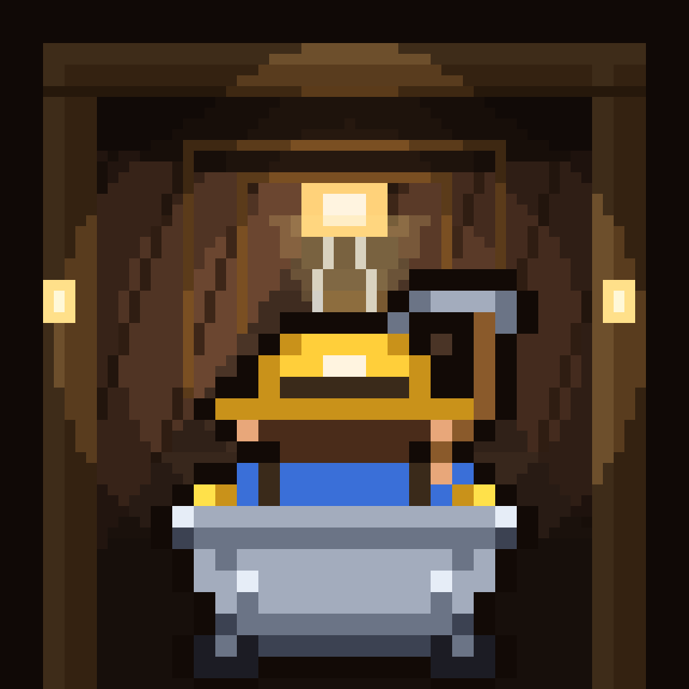

RailHopper
A one-tap mine cart run through the dark. Hop rails, dodge boulders, outrun lit TNT, and keep your lantern burning.
How to play
- Tap the left or right half of the screen to switch rails.
- Boulders and TNT end the run. Lit TNT has to be passed before its fuse runs out, and standing beside it when it blows isn't safe either.
- Your lantern oil sets how far ahead you can see. Every hop adds oil, and quick hops in a row (a Rush) add up to twice as much.
- Daily mode gives everyone the same tunnel for the day. Endless gives you a new one every run.
Questions
Does it need internet? No. It works fully offline.
Are there ads or purchases? No.
How do I reset my best scores? Delete and reinstall the app.
Contact
Found a bug or have feedback? Email avilasteven992@gmail.com and include your iPhone model and iOS version if it's a bug.
Privacy Policy · © 2026 Steven Avila